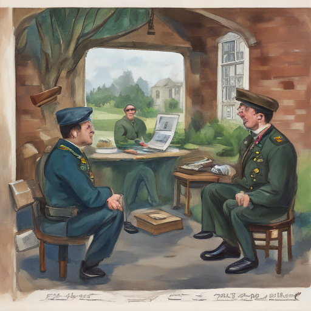

Today at Victoria Barracks, I met Andy Burnham, a veteran commander who had recently retired. He shared stories of his time in Gen service with me, his voice tinged with pride and weariness from the years passed. It was an enlightening conversation that left me pondering different facets of military life.

Keywords: Andy Burnham, Victoria Barracks, Gen Z voters
Fictional diary entry.